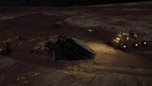

Engalo hears and feels the well known hum and vibration from the Deptford Prize. He smiles as he turns around in the bunk, suddenly feeling a sharp pain to his shoulder. “What the ….” Then Engalo remembers everything. With a smooth easy motion Engalo sits up on the bunk and realise that he is completely naked. His shoulder wound neatly dressed, same with the wound on his shin. The bandages can’t be more than a few hours old. The Deptford Prize banks to the left and the sound of atmospheric molecules dragging on the ship fills the cabin. “When and where are we?” Engalo thinks to himself trying to stand up. To his surprise standing up is relative easy. The pain is mild and tolerable. Putting on his flight suit, and with slow steps Engalo walks up on to the bridge to find Jen in the commander’s chair. “Feeling better?” Jen ask. “You got eyes in your neck as well now?” Engalo replies. “Could hear your wimps a mile away” Jen turns to look at Engalo, she smiles. “Buckle up, were about to land. Found some kind of wreck on the scanners and we need some parts for the communications array”
Engalo staggers down to the co pilot’s chair dublicating the navigation screen on his console. HYADES SECTOR HW-W c1-8. “What are we doing all the way out here Jen, and what happened to the communications array?” “They had started to disassemble the array on Jameson memorial to install a smaler one, since the vessel where to be used only in the bubble. I managed to get it working… kinda. However I need some extra parts. Cyraios didn’t have what we needed so we have to make due on the fly” Jen places the Asp gently down on the surface of a smal planet only surrounded by a thin misty atmosphere. “Did we meet up with Cyraios? When?” “Two days ago” Jen replies. Engalo leans back in the co pilots chair. “Two days… How long have I been out?!” “I’ve been taking care of you for about four days now. You did get a bad fever 12 hours after your collapse, so I contacted Cyraios and we stopped there to get some medical treatment for you and some supplies” Jen power down the engines and walks down to Engalo. “There is a faint becon about two klikks north of here. I’ll take the SRV, and now that you are awake you could do something useful and guide me towards it. Your SRV has seen better days, you really need to keep up with your maintenance schedule. The scanner is barely functioning” Jen looks at Engalo determined. “Never had any problems with Annabell. She works like a charm… Just tap the konsoll a little and the scanner will work perfectly” Engalo says smiling bak at Jen. She frowns as she turns and walks towards the vehicle hangar.

After a short drive Jen arrives at the faint beacon. “Engalo, It’s a downed Condor…” Jen drives around to inspect the damage. There are some scattered debris that doesn’t look like to come from the Condor itself. Exempt from some blast damage on the hull the Condor are in decent shape. “The cockpit is empty. “Who ever crashed her made it out alive” After doing a complete lap of the area Jen stops and activates here flight suit helmet and opens the SRV door. “Walking out to retrieve the beacon now” The radio built in to the her flight suit helmet crackles: “Be careful” Jen walks over the hull, a louse panel on the top makes it easy to get to the beacon. With quite some skill Jen removes the beacon component effortlessly. “All good, I got every thing we need to repair the communications array” Her radio crackles “Great!” Engalo leans back in his chair. He moved from the co pilots chair and up to the commander’s chair now. “My spot” he thought sitting down in the chair with a big smile. Engalo pushes the coms “ETA?” The low sound of static is the only thing coming back to him. “Jen? Are you here yet?” Only static. “Jen! Don’t play this game… do you read?” The static persists from the coms.
Engalo does a quick diagnostics on the short range coms. “What the… It’s a completely separated system than the communications array” Engalo mutters. The ships sensor panel shows the SRV standing still 1,7 kilometres from the Deptford Prize. Quickly Engalo powers the engines and lifts the Asp 10 meters of the ground. Rugged terrain separates the landing zone and the wreck site. Carefully Engalo manoeuvres towards the SRV. Tilting the ship downwards to get a good look at the SRV’s canopy, he could see a clearly irritated Jen sitting in a powerless and dead SRV giving Engalo the finger as he looks down at here. Manoeuvring the Asp over the SRV Engalo gently aligns the vehicle hangar and docks it manually.
Jen enters the bridge. “Your Annabell is a pice of junk!” Engalo turns and looks at here. Her hair a mess from the flight suit helmet, wide dark brown eyes staring directly at him. Engalo cannot help but feel affection for this angry lady standing in front of him. “Are you just going to sit there staring?” Jen asks firmly. Engalo shakes his stare and toughts of. “Sorry about that Jen, it’s like you say. She needs a overhaul” Jen looks at Engalo with a piercing look. “I’ll take over, you cant fly with one arm dumbass” Reluctantly Engalo raises up from the commander’s chair. “You still haven’t answered my question about what we do all the way out here Jennifer…” Jen settles in the commander’s chair and points the ship 15 degrees upwards. Slowly ascending towards the stars. “Cyraios wants Unknown Artefacts for some kind of experiment. But since he’s busy repairing your brand new pice of scrap Conda. We got stuck finding these UAs for him” Jen still clearly irritated. “I’ll go and lie down for a bit, wake me up if you need me” Engalo could feel his heartbeat in his arm like needles piercing the muscle in a steady rhythm. “Sure” Jen replies short. She turns and looks at Engalo as he walks out the bridge deck door, a slight smile on her face.
>Anomaly Detected< Jen quickly throttles down and steers the ship towards the signal source. Using a second to decide not to wake up Engalo. It’s an easy grab and go procedure. The FSD drive spools down and in a small jolt the ship exits supercruise a few kilometres away from the Anomaly. A weird howling sound pierces trough the ship as Jen approaches what seems to be two Unknown artefact’s. The scan alert flashes as the UAs scan the ship. “Scan me all you want, you are both mine” Jen mumbles to herself. Cargoscoop down. Jen lines up the first UA, scooped in no time. A whaling sound could be heard from the cargo hold as the modular alarm goes of. >Damage to fuelscoop< flashes on the HUD. “That was fast” Jen mumbles. Second UA scooped.
Engalo wakes up, a howling scream pierces his mind and a feeling of unrest fills him. Another piercing scream, Engalo almost falling to the floor from the sound. “UAs” Engalo says to himself and heads for the bridge. Walking towads the bridge, the Deptford Prize shakes and moans. The proximity alarm going of with red lights blinking. Engalo runs on to the bridge. “Whats going on?” Engalo falling to the deck as the ship jolts in to a jump. “Hold on!” Jen screams as the Deptford Prize starts to tumble in hyperspace. Smoke fills the bridge with a metallic smell. Engalo holding on to the foot of the commander’s chair. The sound of cracking glass could be heard, sparks flying and a small fire starts on the lower bridge deck in the co pilot’s console. Engalo is thrown forwards as the Deptford Prize exits the jump. A warm sticky substance filling his eyes as he hears crackling and a small whistling sound.
Jen unstraps herself and drags Engalo of the bridge deck, the whistle getting louder. As the bridge deck door closes, a pop followed by a sharp wind noise is heard on the other side of the door. “Good damn UA’s” she says “What a ride…” Engalo replies wiping blood from he’s face. “You got blood in your eyes. The canopy is gone, but we are only a few minutes away from Cyraios’s HQ” Jen activating Engalo’s flight suit helmet and her own before decompressing the Deptford Prize and walking back on the bridge. Sitting down in the commander’s chair she pushes full throttle towards Tetra HQ, Cyraios’s base of operations.
Engalo gets up to his feet and starts walking down towards the bunk quarters, suddenly realising that he cannot feel his arm at all. No pain, no sting, and not able to move his fingers. “Shit” Tapping the short range coms on the flight suit. “How long before we land on Tetra?” “Two minutes, why?” Jen replies.. “Do you have communication with Tetra?” Engalo feeling a little dizzy. “Yes, landing request approved, three minutes of air left” Jen says with a tense voice. Two long minutes later the Deptford Prize lands on Tetra. Fresh air fills inn from outside as the ship is pulled inn to it’s hangar. “That was a close one, meet you on the ramp” Jen says over the coms.
The ramp of the Deptford Prize lowers and Cyraios is standing on the far side of the Hangar walking towards them. “I see you managed to destroy yet another ship Engalo” Cyraios laughs. “Not only the ship this time…” Engalo smiles holding out his left arm to greet Cyraios. The right arm bloodied and lifeless. “Ahh… I see. We need someone to take a look at that right away” Cyraios looking at Engalo’s right lifeless arm. “Follow me” Cyraios says while tapping on a pad. A medical symbol appears on the screen of the pad and a white transportation vehicle comes towards them in a hurry and stops. “Hop on old friend, we will get you patched up in no time” Cyraios smiles “Hopefully… Thanks” Engalo is instructed to lie down by a medical robot in the vehicle. “Come on Jen, you need a checkup as well” Engalo says as he lies down. Jen sitting down beside him. She smiles a twisted smile as she start to realy notice his smashed arm. “I’ll live” Engalo smiles at Jennifer. She takes Engalo’s left hand in hers. “Of course you will” She smiles. “There’s two UAs in the cargo hold” Jen shouts back at Cyraios as the transport moves determined away. Cyraios throws his hand in to the air mimicking a high five.
“You know Jennifer… I’m really tired of being beaten up. It’s time to turn this around” Jennifer looks down at Engalo smiling. “Ever heard of the Formidine Rift? It will take some time for you to recover from this one… Let’s go out there and see some wonders, plenty of time for revenge later” Engalo stroking his fingers through Jennifer’s hair and down here cheek. “Sounds like a good plan Jen…”
To be continued…